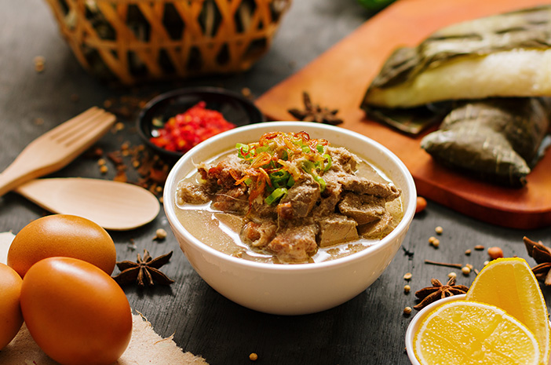
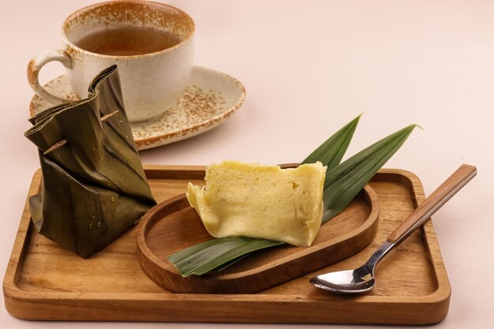

6 Menu Makanan Khas Sulawesi Selatan 🌿

Coto Makassar
Sup khas Makassar berbahan daging sapi dan jeroan dengan rempah khas yang kaya rasa.
Bahan-bahan:
- 500 gr daging sapi dan jeroan
- 2 liter air
- 5 siung bawang merah
- 3 siung bawang putih
- 2 cm jahe
- 2 batang serai, memarkan
- 3 lembar daun salam
- 3 sdm kacang tanah goreng, haluskan
- Garam, merica, dan kaldu bubuk secukupnya
Cara membuat:
- Rebus daging dan jeroan hingga empuk, potong-potong.
- Tumis bawang merah, bawang putih, jahe, serai, dan daun salam hingga harum.
- Masukkan tumisan ke dalam rebusan daging, tambahkan kacang tanah halus.
- Beri garam, merica, dan kaldu bubuk, masak hingga bumbu meresap.
- Sajikan panas dengan ketupat dan sambal.

Pallubasa
Sup khas Makassar mirip coto, dengan tambahan santan dan rempah khas yang gurih.
Bahan-bahan:
- 500 gr daging sapi dan jeroan
- 1 liter santan
- 5 siung bawang merah
- 3 siung bawang putih
- 2 cm jahe dan kunyit
- 2 batang serai, memarkan
- 3 lembar daun salam
- Garam dan merica secukupnya
Cara membuat:
- Rebus daging dan jeroan hingga empuk, potong-potong.
- Tumis bawang merah, bawang putih, jahe, kunyit, serai, dan daun salam hingga harum.
- Masukkan tumisan ke dalam rebusan daging, tambahkan santan.
- Beri garam dan merica, masak hingga bumbu meresap dan kuah mengental.
- Sajikan panas dengan nasi putih dan sambal.

Kapurung
Makanan tradisional khas Sulawesi Selatan dari sagu yang disajikan dengan kuah ikan dan sayur.
Bahan-bahan:
- 200 gr tepung sagu
- 1 liter air
- 200 gr ikan tongkol atau ikan segar
- Sayur bayam, daun singkong, atau daun pepaya
- 5 siung bawang merah
- 3 siung bawang putih
- 2 buah cabai merah besar
- Garam dan gula secukupnya
Cara membuat:
- Campur tepung sagu dengan air panas, aduk hingga mengental dan membentuk bola kecil.
- Rebus ikan dengan bumbu halus dan sayur hingga matang.
- Sajikan sagu dengan kuah ikan dan sayur sebagai pelengkap.

Ikan Bakar Celebes
Ikan bakar dengan bumbu rempah khas Sulawesi Selatan, gurih dan pedas.
Bahan-bahan:
- 1 ekor ikan kakap atau ikan laut lainnya
- 5 siung bawang merah
- 3 siung bawang putih
- 5 buah cabai merah keriting
- 2 buah tomat
- 1 sdm air jeruk nipis
- Garam dan gula secukupnya
- Minyak untuk menumis
Cara membuat:
- Haluskan bawang merah, bawang putih, cabai, dan tomat.
- Marinasi ikan dengan bumbu halus dan air jeruk nipis selama 30 menit.
- Bakar ikan hingga matang sambil sesekali dioles bumbu.
- Sajikan hangat dengan nasi dan sambal.

Barongko
Puding pisang manis khas Makassar yang lembut dan legit.
Bahan-bahan:
- 3 buah pisang raja, haluskan
- 2 butir telur
- 100 ml santan kental
- 100 gr gula pasir
- Daun pisang untuk membungkus
- Sejumput garam
Cara membuat:
- Campur pisang halus, telur, santan, gula, dan garam, aduk rata.
- Tuang adonan ke daun pisang, bungkus rapat.
- Kukus selama 30 menit hingga matang.
- Sajikan sebagai pencuci mulut yang manis dan lezat.

Roti Jala Papua
Roti jala khas Papua ini lezat dan sering disajikan sebagai camilan atau pendamping lauk.
Bahan-bahan:
- 200 gr tepung terigu
- 2 butir telur
- 300 ml santan cair
- Sejumput garam
- Minyak goreng secukupnya
Cara membuat:
- Campur tepung terigu, telur, santan, dan garam sampai adonan cair dan tidak bergerindil.
- Masukkan adonan ke dalam kantong plastik segitiga atau alat khusus roti jala.
- Buat pola jala di atas wajan datar yang sudah dipanaskan dan dioles minyak sedikit.
- Masak hingga matang dan berwarna kekuningan, angkat.
- Sajikan hangat dengan kuah kari atau lauk favorit.